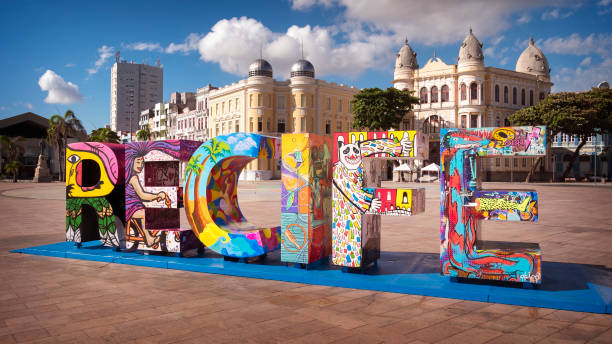
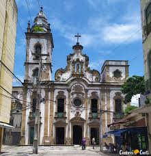
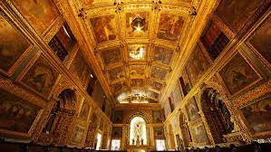
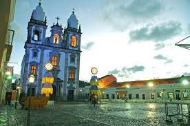
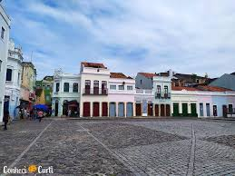

Conheça pontos turísticos do Recife

Conhecido como a “Veneza Brasileira” pelos seus diversos rios e também como a terra do Frevo, o Recife é uma das
principais capitais do Nordeste do Brasil, com uma rica história, cultura vibrante e uma beleza natural.
Se você quer saber o que fazer na cidade, veja os principais pontos turísticos do Recife para colocar no seu
roteiro, além de algumas dicas do que fazer à noite na cidade.
Capela Dourada


A Capela Dourada, que recebe o nome formalmente de Capela dos Noviços da Ordem Terceira de São Francisco de
Assis, é uma um dos principais pontos turísticos do Recife e uma das igrejas mais impressionantes,
localizada no Convento de Santo Antônio.
A capela foi erguida no século 18 e tem uma decoração barroca exuberante, com muito ouro, talha e azulejos
portugueses. A riqueza artística e histórica chama a atenção.
Faz parte do projeto Recife Sagrado, junto com outros templos: Madre de Deus, Nossa Senhora do Rosário dos
Homens Pretos do Recife, Basílica de Nossa Senhora da Penha, Santa Tereza D’Ávila da Ordem Terceira do Carmo
e a Sinagoga Kahal-Zur Israel.
Pátio de São Pedro


O Pátio de São Pedro é uma praça histórica que fica no bairro de São José, cercada por casinhas coloridas e
pela Catedral Basílica de São Pedro dos Clérigos.
O pátio é um espaço cultural que abriga eventos como feiras de artesanato, shows musicais noturnos e festas
populares.
Também é nele que fica o Memorial Chico Science, o cantor recifenses expoente do manguebeat. É possível
apreciar a arquitetura colonial e a gastronomia típica, através dos restaurantes na região.